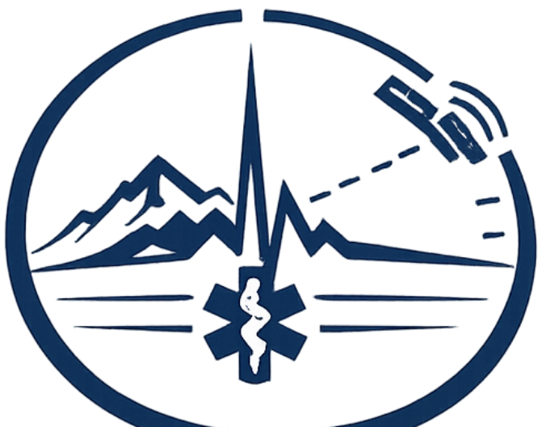

Role1
Role1 is the clinical decision tool — point-of-care support for frontline clinicians providing prolonged field care.
PFC_EDGE is the simulation engine inside Role1 — it runs training scenarios so you can practise using the tool.
Clinical decision tools for prolonged field care and critical care transport
Critical, austere, and disaster training for responders and emergency managers
Each tool is two things: a clinical decision tool you can use right now, and a training simulator. Pick the path you need.

Role1 is the clinical decision tool — point-of-care support for frontline clinicians providing prolonged field care.
PFC_EDGE is the simulation engine inside Role1 — it runs training scenarios so you can practise using the tool.
FoxTwo is the clinical decision tool — decision support and reasoning for critical care transport.
CCT_EDGE is the simulation engine inside FoxTwo — it runs transport training scenarios so you can practise using the tool.
These tools support clinical reasoning. They do not replace clinical judgement, local protocols, or medical direction.
Pick a training scenario — Easy, Hard, or Peds.
Loading scenarios…